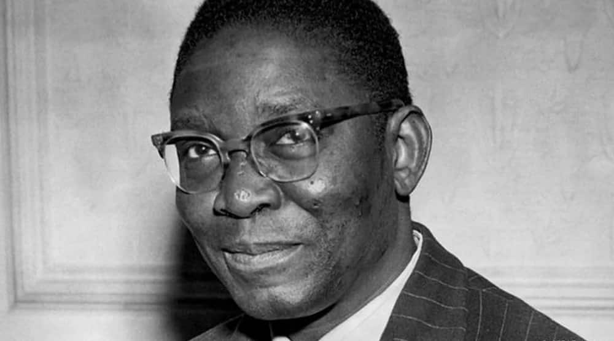

Here's a time line of Dr. Nnamdi Azikiwe's life:
- 1904 - Born in Zungeru, Northern Nigeria Protectorate.
- 1930 - Obtained his BA in Political Science from Lincoln University, became a graduate-student instructor in the history and political-science departments at Lincoln University, where he created a course in African history.
- 1932 - He received a master's degree in Religion from Lincoln University and a master's degree in Anthropology from the University of Pennsylvanian.
- 1934 - Returned to Nigeria, applied as a foreign-service official for Liberia, but was rejected because he was not a native of the country.
- 1934 - He accepted an offer from Ghanaian businessman Alfred Ocansey to become founding editor of the African Morning Post (a new daily newspaper in Accra, Ghana). He was given a free hand to run the newspaper, and recruited many of its original staff. Azikiwe wrote "The Inside Stuff by Zik", a column in which he preached radical nationalism and black pride which raised some alarm in colonial circles.
- 1936 - Marries wife of 47 years Flora Ogoegbunam. An article, "Has the African a God?" by I.T.A. Wallace-Johnson, and Azikiwe (as editor) was tried for sedition. He was originally found guilty and sentenced to six months in prison, but his conviction was overturned on appeal.
- 1937 - Returned to Lagos, Nigeria and founded the West African Pilot, a newspaper which he used to promote nationalism in Nigeria. In addition to the Pilot, his Zik Group established newspapers in politically and economically important cities throughout the country.
- 1944 - He entered politics, co-founding the National Council of Nigeria and the Cameroons (NCNC) with Hebert Macaulay.
- 1954 - Became premier of Nigeria's Eastern Region from 1954 to 1959.
- 1960 - Became governor-general on 16 November, 1960 with Abubakar Tafawa Balewa as prime minister, and became the first Nigerian named to the Privy Council of the United Kingdom.
- 1963 - Became the first president when Nigeria became a republic in 1963, position which he occupied fron 1963 to 16 January 1966.
- 1966 - He and his civilian colleagues were removed from office in the 15 January 1966 military coup, and he was the most prominent politician to avoid assassination after the coup.
- 1972 - He was the chancellor of the University of Lagos from 1972 to 1976.
- 1978 - He joined the Nigerian People's Party, making unsuccessful bids for the presidency in 1979 and 1983.
- 1983 - He left politics involuntarily after the 31 December 1983 military coup.
- 1996 - Dies at the age of 91 on 11 May 1996 at the Unversity of Nigeria Teaching Hospital in Enugu after a long illness, and was buried in his native Onitsha.
The man who played a very crucial role in the status of the Nigerian society and also in the political life of the country. Known by the nickname "Zik" or "Zik of Africa".